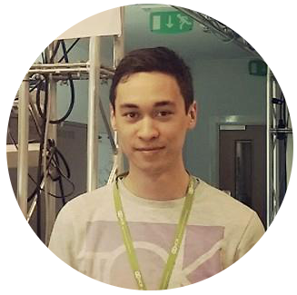
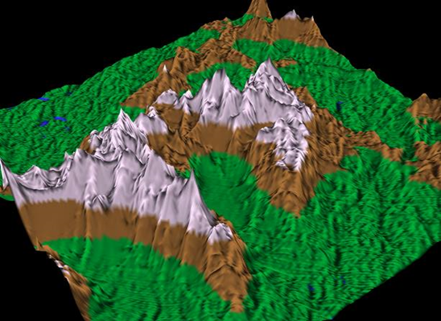

<head></head>
Hi I'm Colin, a programmer, tech enthusiast and Applied Computing graduate!
I am an Applied Computing graduate living in Scotland and I love to mess around with code. I am currently building this website in my spare time in between looking for software dev work.
Check out some other stuff I've been working on!
Pseudorandom 3D Terrain Generation
C++, OpenGL and libnoise
September 2015 - April 2016
This project was a trial by fire into the depths of C++ and graphical programming using OpenGL. As part of my Honours project at the University of Dundee, I looked at implementing terrain diversity into a randomly generated 3D terrain. Randomly generated terrain can be great for simulating a specific single type of terrain, but what if you want different types of terrain in the same terrain object? Specifically, I looked at generating naturally flat terrain and mountainous ridges using pseudorandom coherent noise in order to retain a natural looking structure, then combined them in a way that they are randomly placed into the 3D terrain in regions of random position and size. The final program is a proof of concept of implementing more than one terrain type into the same terrain using random generation, and paves the way for adding more and more different terrain types to create a truly diverse randomly generated terrain!
Personal Website
HTML, CSS, Javascript (jQuery) and Bootstrap
Started August 2015 - Ongoing
I started making this website for a few reasons. First off, I was tinkering with my Raspberry Pi and looked at hosting a website on my local network as a hobby project. I decided that I probably needed a portfolio website for others to check out what stuff I'm doing, but more importantly so I can keep track of what I'm doing and how I am presenting that info to other people. I was so impressed with the results that I looked into getting this site publicly available - but hosted on the Pi on an Apache 2 web server. With the introduction of jQuery and fancy bootstrap elements the site became a bit cumbersome to load, so it's now hosted on my personal Digital Ocean droplet. I learned a lot of stuff about static web development and deployment, as well as the bother caused from trying to host on my home network which required tinkering with my router and modem settings. I'm not ditching the Pi completely though, I'm a big fan of Pi projects and I'd love to work on a new interactive project hosted on it!
Find me on these sites!
Something terrible happened on this site? Want to talk to me about my projects? Drop me an email at contact@colinmackey.co.uk